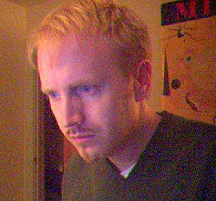

yin
ok. so i grew up loving elvis costello, jesus and mary chain, u-2, cocteau twins, played guitar in an alternative band, went to college, got into computers, and now am somehow semi-respectible and am looking to buy a house. what happened? still need to shake things up. i need a boyfriend. i'm 34, blond/blue, 5'9", sexy, and looking for the real thing.
yang
i ended a 4 year LTR a few months ago. i'm looking for friends at this point - i'm a little gun shy - but i am open to see what develops. an LTR is my ultimate goal.
i'm 34, blond/blue, 5'9", 145 lbs, fair-skinned. i like to hang out at Little City, watching movies at Dobie, jogging at Town Lake Trail, and taking day trips exploring central Texas.
music-wise, i really like electronica - lamb, portishead, massive attack, air, eno. i was a musician for many years and i write from time to time.
i am an avid runner who lives on south congress so i'm on the town lake trail often. i'm doing more cross training now - the gym 3 times a week - but i'm planning to run alot of races this year. so far this fall i've done two 5k's, a 10k, and just recently a 15k. at the csc 15k i averaged under 8 minutes/mile!
i am pretty established in my career - a developer/programmer for a design company - and lead a pretty stable lifestyle. i must admit i'm really not into sports, other than participating in running. i learned how to snowboard this winter, and loved it. i plan to do it again several times this winter, which is why i'm working out at the gym now.